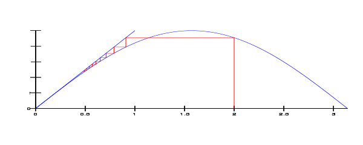

| Choisissez votre langue ! | Choose your language ! |
Méthode des itérations successives
Successive approximations process
Pré-requis
Prerequisites
Nous avons également vu ce qu'est un espace métrique ( ).
Nous supposons ici, de plus, connues les notions de suite convergente et de fonction continue. (Pas encore exposées dans ce cours)
Pour comprendre l'énoncé qui va suivre il faut savoir ce qu'est un espace métrique 'complet'.
We have also seen what a metric space is ( ).
We suppose here, moreover, known the notions of convergent sequence and continuous function. (Not yet exposed in this course)
To understand the following statement, we must know what a 'complete' metric space is.
Il en est de même de ℝn et ℂn.
Voici encore une définition (E désigne un espace métrique):
It is the same for ℝn and ℂn.
Here is one more definition (E denotes a metric space):
d(f(x),f(y)) ≤ kd(x,y) ∀ (x,y) ∈ E×E, où k est une constante réelle 0<k<1.
Le théorème de Picard-Banach
The Picard-Banach theorem
| Stefan Banach (1892-1945) | Emile Picard (1856-1941) |
f est continue
f possède un unique point fixe x
Pour tout élément x0 de E x est limite de la suite récurrente commençant par x0 et définie par xn+1=f(xn)
f is continuous
f has a unique fixed point x
For any element x0 of E x is the limit of the recurrent sequence starting with x0 and defined by xn+1=f(xn)
démonstration
L'hypothèse faite sur f prouve que d(x-y) < ε ⇒ d(fx),f(y)) < ε . La continuité en résulte. On montre par récurrence que si (xn) est une suite telle que dans l'enoncé, on a:\( d\left ( f\left ( x_{n+1} \right ),f\left ( x_{n} \right ) \right )\leqslant k^{n}d\left ( x_{1} ,x_{0}\right ) \)
et si p ≥ q\( d\left ( f\left ( x_{p} \right ),f\left ( x_{q} \right ) \right )\leqslant \sum_{i=q}^{p-1}d\left ( f\left ( x_{i} \right ),f\left ( x_{i+1} \right ) \right ) \)
\( d\left ( f\left ( x_{p} \right ),f\left ( x_{q} \right ) \right )\leqslant \sum_{i=q}^{p-1}k^{i}d\left (x_{0},x_{1} \right ) \)
\( d\left ( f\left ( x_{p} \right ),f\left ( x_{q} \right ) \right )\leqslant k^{q}\sum_{i=0}^{p-1-q}k^{i}d\left (x_{0},x_{1} \right ) \)
\( d\left ( f\left ( x_{p} \right ),f\left ( x_{q} \right ) \right )\leqslant \frac{k^{q}}{1-k}d\left (x_{0},x_{1} \right ) \)
Cette inégalité montre que la suite x0,f(x0), f(f(x0)),...,fn(x0) est une suite de Cauchy. Elle est donc convergente vers une limite x.Comme on a f(xn)=xn+1 et que f est continue, on a en passant à la limite f(x)=x et x est un point fixe de f.
Si x et y sont deux points quelconques on a d(fx),f(y)) < d(x,y) on ne peut donc avoir deux points fixes distincts et ceci achève la démonstration.
proof
The hypothesis made on f proves that d(xy) < ε ⇒ d(fx),f(y)) < ε . Continuity results from this. We show by induction that if (xn) is a sequence such as in the statement, we have: !-- FORMULE UNIV INLINE -->\( d\left ( f\left ( x_{n+1} \right ),f\left ( x_{n} \right ) \right )\leqslant k^{n}d\left ( x_{1} ,x_{0}\right ) \)
and if p ≥ q\( d\left ( f\left ( x_{p} \right ),f\left ( x_{q} \right ) \right )\leqslant \sum_{i=q}^{p-1}d\left ( f\left ( x_{i} \right ),f\left ( x_{i+1} \right ) \right ) \)
\( d\left ( f\left ( x_{p} \right ),f\left ( x_{q} \right ) \right )\leqslant \sum_{i=q}^{p-1}k^{i}d\left (x_{0},x_{1} \right ) \)
\( d\left ( f\left ( x_{p} \right ),f\left ( x_{q} \right ) \right )\leqslant k^{q}\sum_{i=0}^{p-1-q}k^{i}d\left (x_{0},x_{1} \right ) \)
\( d\left ( f\left ( x_{p} \right ),f\left ( x_{q} \right ) \right )\leqslant \frac{k^{q}}{1-k}d\left (x_{0},x_{1} \right ) \)
This inequality shows that the sequence x0,f(x0), f(f(x0)),...,fn(x0) is a Cauchy sequence. It is therefore convergent towards a limit x.As we have f(xn)=xn+1 and that f is continuous, we have in passing to the limit f(x)=x and x is a fixed point of f.
If x and y are any two points we have d(fx),f(y)) < d(x,y) we cannot therefore have two distinct fixed points and this completes the demonstration.
Naturellement plus x0 est voisin de x et plus k est petit, plus la convergence sera rapide.
Naturally the more x0 is close to x and the smaller k is, the faster the convergence will be.

Image http://en.wikipedia.org/wiki/File:Sine_fixed_point.svg (modifiée)
Application à la résolution des systèmes
Considérons un système de Cramer:AX=B
La matrice A peut s'exprimer de différentes manières sous la forme A=D+M où D est inversible.
Le système équivaut donc à:
(D+M)X=B
ou encore
DX=B-MX
X=-D-1MX+D-1B
Tout revient donc à trouver un point fixe à l'application f: X → -D-1MX+D-1B
On pourra appliquer la méthode des itérations successives si cette application est contractante.
Or d(f(X)-f(Y)) = ||D-1MX+D-1B- D-1MY+D-1B||=||D-1MX-D-1MY|| =||D-1M(X-Y)||.
Introduisons la norme matricielle de D-1M, on a:
||D-1M(X-Y)|| ≤ ||D-1M||×||X-Y||.
L'application f sera donc contractante si ||D-1M|| <1
Ce qui sera le cas si ||D-1||×||M|| < 1
Application to the resolution of systems
Consider a Cramer system:AX=B
The matrix A can be expressed in different ways in the form A=D+M where D is invertible.
The system is therefore equivalent to:
(D+M)X=B
or
DX=B-MX
X=-D-1MX+D-1B
Everything therefore comes down to finding a fixed point at the map f: X → -D-1MX+D-1B
The method of successive iterations can be applied if this application is contracting.
Or d(f(X)-f(Y)) = ||D-1MX+D-1B- D-1MY+D-1B||=||D-1MX-D-1MY|| =||D-1M(X-Y)||.
Let us introduce the matrix norm of D-1M, we have:
||D-1M(XY)|| ≤ ||D-1M||×||XY||.
The map f will therefore be contracting if ||D-1M|| <1
Which will be the case if ||D-1||×||M|| < 1
|
Création Gilles Dubois - licence CC-BY-SA
Created by Gilles Dubois - licence CC-BY-SA
|
Septembre 2023
September 2023
|
Version mobile Jquery
Mobile Jquery version
|
|